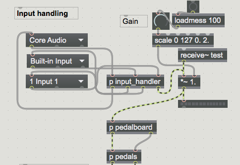
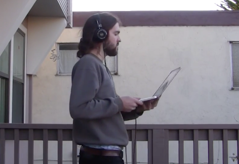

tracks
iOS music app
Tracks is a tool for mobile songwriting. With the application, users can quickly record, edit and arrange audio. Save lyrics, link tracks together, and stay organized, all in one place.

pedal-machine
machine learning guitar pedal
Pedal-Machine is a machine learning guitar pedal for Max 7. The pedal detects amplitude and tempo and determines which pedal effect should be active based on the training data.

virtual music
exploration with 3D audio
Virtual music is an attempt to make music more tangible. With this Max patch, sounds can be placed at fixed locations, allowing you to walk between them.